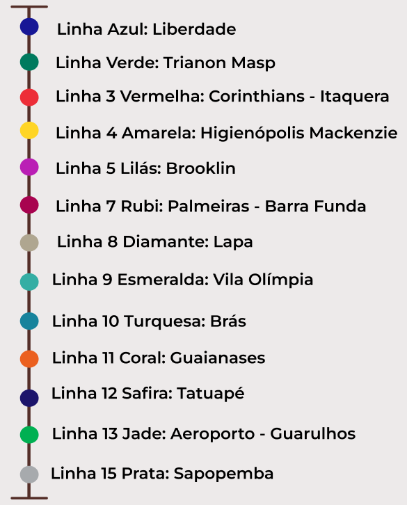

Onde estamos?
Bem-vindos, viajantes do sabor! Aqui, nas encruzilhadas de São Paulo, onde os trilhos se entrelaçam e os vagões dançam ao ritmo da cidade, encontramos nossa morada. Nossas cafeterias, como estações mágicas, aguardam por vocês.
E assim, viajantes, nossas cafeterias se espalham pelas linhas do São Paulo, cada uma com seu sabor exclusivo. Peguem seus copos, seus sorrisos e embarquem. Estamos no coração de São Paulo, onde o café é a língua universal e cada xícara conta uma história.
